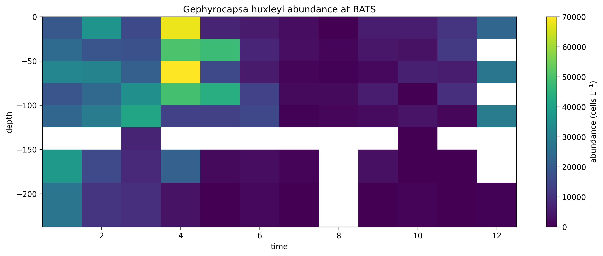
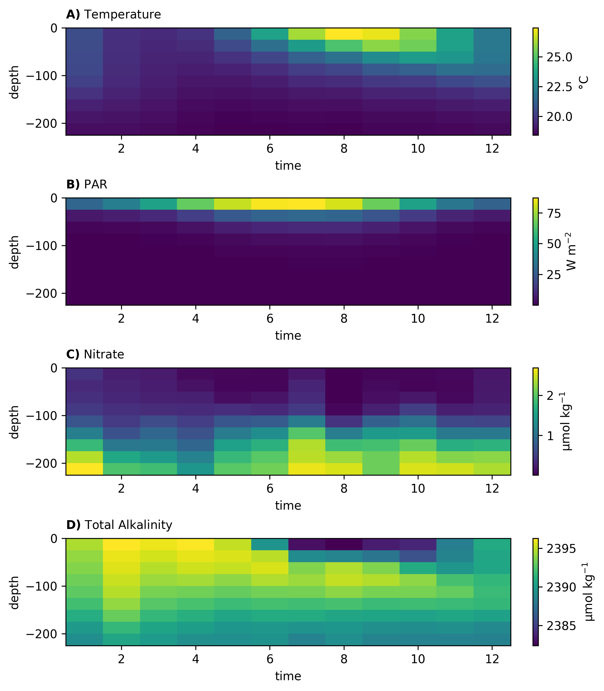
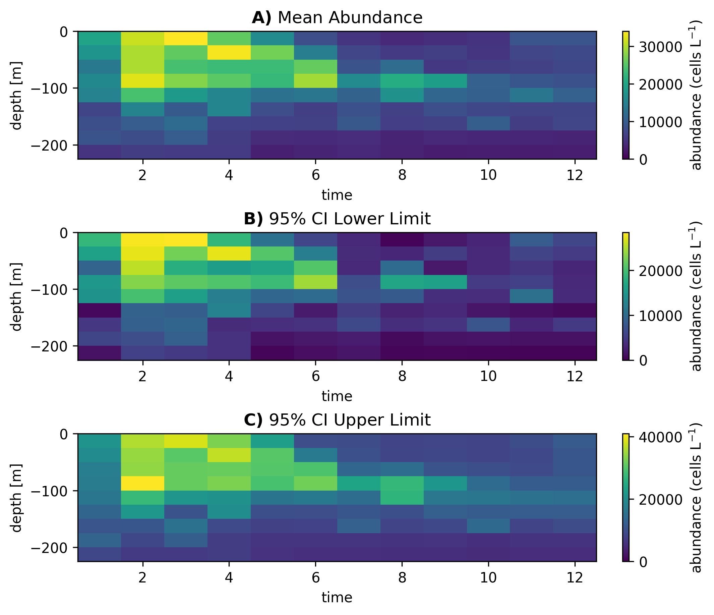
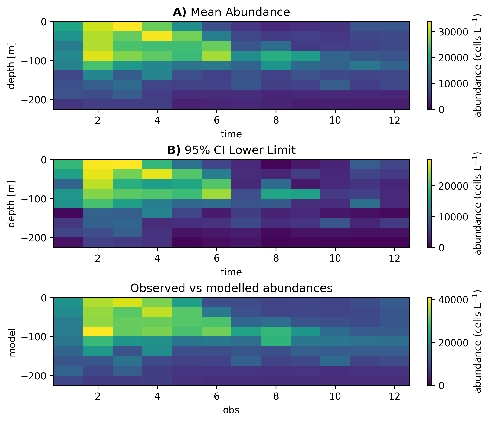

Coccolithophore abundance in the Bermuda Atlantic Time Series#
In this example we will use Abil to predict the biomass of the calcifying nanoplankton (‘Coccolithophores’). We will focus on the species Gephyrocapsa huxleyi which is highly abundant in the global oceans, and plays an important role in the carbon cycle. We fill focus this example on the Bermuda Atlantic Time Series (BATS), a location with great temporal coverage of G. huxleyi. In this location, wind-driven mixing in the winter drives nutrient upwelling which results in high concentrations of G. huxleyi. In the summer, as nutrient influx decreases due to lower mixing the abundance of G. huxleyi subsequently decreases [1]. An interesting temporal dynamic we will try to capture with our machine learning ensemble.
As Gephyrocapsa huxleyi is present in low concentrations most of the year, we will use a 1-phase regression model. For an example of the 2-phase model see Southern Ocean distribution of Gephyrocapsa huxleyi.
YAML example#
Before running the model, model specifications need to be defined in a YAML file. For a detailed explanation of each parameter see Model YAML Configuration.
An example of YAML file of a 1-phase model is provided below.
---
root: ./
run_name: regressor #update for specific run name
path_out: ModelOutput/ #root + folder
prediction: data/prediction.csv #root + folder
targets: ../data/targets.csv #root + folder
training: data/training.csv
predictors: ["temperature",
"sio4", "po4", "no3",
"o2", "DIC", "TA",
"PAR"]
verbose: 1 # scikit-learn warning verbosity
seed : 1 # random seed
n_threads : 3 # how many cpu threads to use
cv : 5 # number of cross folds
ensemble_config:
classifier: False
regressor: True
m1: "rf"
m2: "xgb"
m3: "knn"
upsample: False
stratify: False
param_grid:
rf_param_grid:
reg_param_grid:
n_estimators: [100]
max_features: [0.2, 0.4, 0.8]
max_depth: [50]
min_samples_leaf: [0.5]
max_samples: [0.5]
xgb_param_grid:
reg_param_grid:
learning_rate: [0.05]
n_estimators: [100]
max_depth: [7]
subsample: [0.8]
colsample_bytree: [0.5]
gamma: [1]
reg_alpha: [0.1]
knn_param_grid:
reg_param_grid:
max_samples: [0.85]
max_features: [0.85]
estimator__leaf_size: [5]
estimator__n_neighbors: [5]
estimator__p: [1]
estimator__weights: ["uniform"]
knn_bagging_estimators: 30
Running the model#
After specifying the model configuration in the relevant YAML file, we can use the Abil API to 1) tune the model, evaluating the model performance across different hyper-parameter values and then selecting the best configuration 2) predict in-sample and out-of-sample observations based on the optimal hyper-parameter configuration identified in the first step 3) conduct post-processing such as exporting relevant performance metrics, spatially or temporally integrated target estimates, and diversity metrics.
Loading dependencies#
Before running the Python script we need to import all relevant Python packages. For instructions on how to install these packages, see requirements.txt and the Abil Installation.
#paths:
import os
#handling data:
import numpy as np
import pandas as pd
import xarray as xr
from yaml import load
from yaml import CLoader as Loader
#abil functions:
from abil.tune import ModelTuner as tune
from abil.predict import ModelPredictor as predict
from abil.post import AbilPostProcessor as post
#plotting:
import matplotlib.pyplot as plt
import seaborn as sns
Loading the configuration YAML#
After loading the required packages we need to define our file paths.
os.chdir(os.path.join(".", "examples"))
Then we can load the YAML:
#load configuration yaml:
with open('regressor_BATS.yml', 'r') as f:
model_config = load(f, Loader=Loader)
Loading example data#
Next we load some example data, here we utilize abundance data from the CASCADE database [2]. The CASCADE database provides observations gridded to 1 degree x 1 degree x 5 meters x 1 month. For the example we have subset the data for Bermuda and have averaged the observations with latitude and longitude. In addition to our predictors (y_train) we also need environmental data which match our predictions (‘X_train’). This data was obtained from monthly climatologies from data sources such as the World Ocean Atlas [3], NNGv2 [4][5] and Castant et al., 2024 [6].
When applying the pipeline to your own data, note that the data needs to be in a Pandas DataFrame format.
#load example training data:
d = pd.read_csv(os.path.join("data", "bats_training.csv"))
#define target:
target= "Gephyrocapsa huxleyi"
#define predictors based on YAML:
predictors = model_config['predictors']
#split training data in X_train and y
y = d[target]
X_train = d[predictors]
Plotting example data#
We can have a look at the example data. It already has pretty good data coverage.
#plot training data:
#first we setup a helper function to plot the rasters:
def plot_depth_time(ax, da, variable=None, vmin=None, vmax=None,
cbar_label=None):
if isinstance(da, pd.DataFrame):
da = da.to_xarray()
if isinstance(da, xr.Dataset):
da = da[variable]
m=da.plot(ax=ax,add_colorbar=True,
vmin=vmin,vmax=vmax)
m.colorbar.set_label(cbar_label)
return ax
# then we can make the plots
fig, ax = plt.subplots(figsize=(14,5))
d.set_index(['depth', 'time'], inplace=True) # for plotting
plot_depth_time(ax, d, variable=target, cbar_label=r'abundance (cells L$^{-1}$)')
ax.set_title("Gephyrocapsa huxleyi abundance at BATS")
plt.savefig('BATS_observations.png',dpi=300,bbox_inches='tight',facecolor='white')
plt.show()

Training the model#
Next we train our model. Note that depending on the number of hyper-parameters specified in the YAML file this can be computationally very expensive and it recommended to do this on a HPC system.
#train your model:
m = tune(X_train, y, model_config)
m.train(model="rf")
m.train(model="xgb")
m.train(model="knn")
Making predictions#
After training our model we can make predictions on the BATS environmental dataset:
First we need to load our environmental data to make the predictions on (X_predict):
#load prediction data:
X_predict = pd.read_csv(os.path.join("data", "bats_prediction.csv"))
X_predict.set_index(['depth', 'time'], inplace=True)
X_predict = X_predict[predictors]
We can also quickly plot the environmental data. Note the seasonality in key parameters such as PAR and temperature.
#plotting the prediction data
vars_list=[('temperature','Temperature','°C'),
('PAR', r'PAR ',r'W m$^{-2}$'),
('no3','Nitrate','µmol kg$^{-1}$'),
('TA','Total Alkalinity','µmol kg$^{-1}$')]
fig,axs=plt.subplots(4,1,figsize=(7,8),constrained_layout=True)
for ax,(v,title,unit),lab in zip(axs,vars_list,['A)','B)','C)', 'D)']):
plot_depth_time(ax, X_predict, variable=v, vmin=None, vmax=None, cbar_label=unit)
ax.set_title(rf'$\mathbf{{{lab}}}$ {title}',loc='left',fontsize=10,pad=6,y=1.02)
plt.savefig('BATS_environment.png',dpi=300,bbox_inches='tight',facecolor='white')
plt.show()

Then we can make our predictions:
#predict your model:
m = predict(X_train, y, X_predict, model_config)
m.make_prediction()
Post-processing#
Finally, we conduct the post-processing.
# Posts
targets = np.array([target])
def do_post(statistic):
m = post(X_train, y, X_predict, model_config, statistic, datatype="abundance")
m.export_ds("BATS")
do_post(statistic="mean")
do_post(statistic="ci95_UL")
do_post(statistic="ci95_LL")
Plotting#
Now that we have predictions we can plot them:
# Plot the results
ds = xr.open_dataset(os.path.join("ModelOutput", "regressor", "posts", "BATS_mean_abundance.nc"))
ds_LL = xr.open_dataset(os.path.join("ModelOutput", "regressor", "posts", "BATS_ci95_LL_abundance.nc"))
ds_UL = xr.open_dataset(os.path.join("ModelOutput", "regressor", "posts", "BATS_ci95_UL_abundance.nc"))
fig,axs=plt.subplots(3,1,figsize=(7,6),constrained_layout=True)
for ax,da,title,lab in [
(axs[0], ds[target], 'Mean Abundance','A)'),
(axs[1], ds_LL[target], '95% CI Lower Limit','B)'),
(axs[2], ds_UL[target], '95% CI Upper Limit','C)')]:
plot_depth_time(ax, da, vmin=0, cbar_label=r'abundance (cells L$^{-1}$)')
ax.set_title(rf'$\mathbf{{{lab}}}$ {title}')
plt.savefig('BATS_predictions.png',dpi=300,bbox_inches='tight',facecolor='white')
plt.show()

Model performance#
We can also check the stats
# Check statistics
obs_abundance = pd.read_csv(os.path.join("ModelOutput", "regressor", "posts",
"performance", "ens_performance.csv"))
>>> print(
>>> f"error metrics:\n"
>>> f"R2 = {obs_abundance['R2'][0]:.2f}\n"
>>> f"relative RMSE = {obs_abundance['rRMSE'][0]*100:.2f} (%)\n"
>>> f"relative MAE = {obs_abundance['rMAE'][0]*100:.2f} (%)"
>>> )
error metrics:
R2 = 0.20
relative RMSE = 156.20 (%)
relative MAE = 121.10 (%)
And plot the predictions vs observations:
# Merge obs and model for plotting
targets = np.array([target])
def do_stats(statistic):
m = post(X_train, y, X_predict, model_config, statistic, datatype="abundance")
m.merge_obs(file_name="BATS", index_cols=['depth', 'time']) #default is lat, lon, depth, time
do_stats(statistic="mean")
obs_abundance = pd.read_csv(os.path.join("ModelOutput", "regressor", "posts",
"BATS_obs_abundance.csv"))
# plot
sns.regplot(data = obs_abundance, x = 'Gephyrocapsa huxleyi',
y= 'Gephyrocapsa huxleyi_mod')
plt.xlabel("obs")
plt.ylabel("model")
plt.title('Observed vs modelled abundances')
plt.savefig('BATS_obs_preds.png',dpi=300,bbox_inches='tight',facecolor='white')
plt.show()
